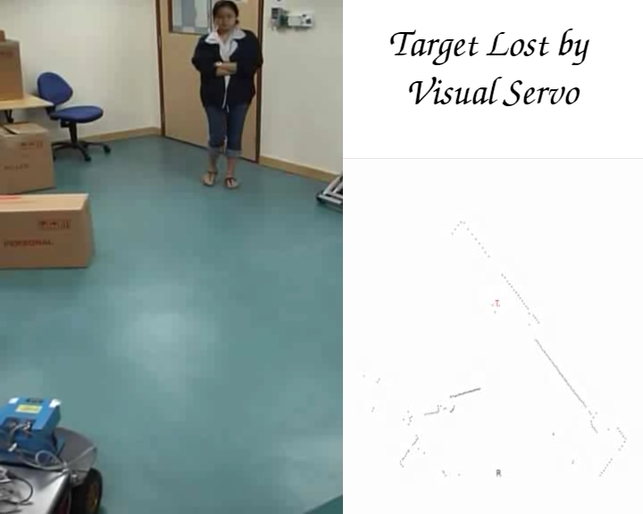
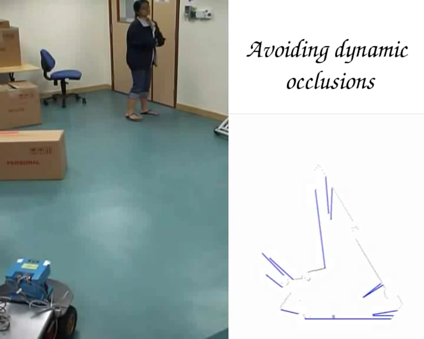
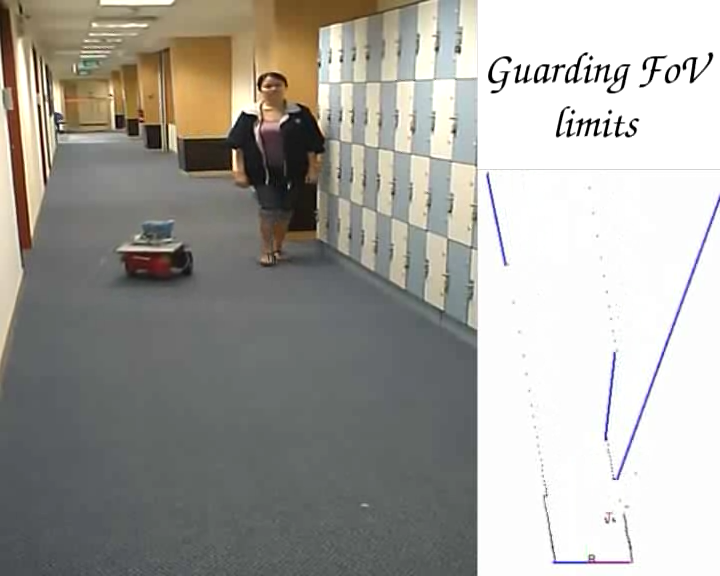
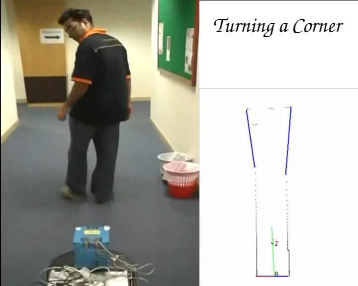
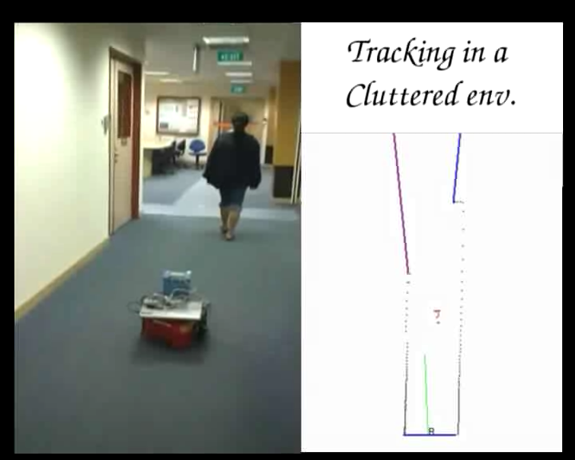

|  | The visual servo algorithm does not take into account the changing environment and allows the target to be occluded by the box. |
|  | The vantage tracker explicitly models the visibility relationship of the target, itself and the occlusion due to the box at each instant. It identifies the risk of losing the target to the occlusion generated due to the box and reduces this risk by swinging out inorder to keep the target in view. The inset at the bottom-right in the video depicts the visibility and the motion decision of the robot. The blue lines denote the occlusion edge, and the green line is the next motion decision. Note: that at the beginning of the video the robot turns to its right to adjust and plan for the presence of occlusions produced by the box, instead of just moving straight towards the target. |
|  | When the target turns and doubles back on the robot, it challenges the FoV limits and the robot turns to keep the target away from the FoV limits. |
|  | We see in the video that in the beginning the robot gives more priority to moving towards the corner but when the target is close to the occlusion edge and is in danger of being lost the robot has to swing out to keep the target in view. It is able to make a successful turn because by moving towards the corner in the beginning, it has acheived a relative vantage position from where it can swing out more effectively. |
|  | The chairs in the lobby generate a large number of escape edges that the robot has to handle. Note that the robot tends to generate motion decisions biased towards left as there are larger number of escape edges there. Due to the online nature and fast computation of the risk the robot is able to successfully follow the target around. |
| latest results!! The videos will be uploaded soon ... |
The robot is able to detect and follow the person even in the presence of other people and momentary occlusions. The robot was able to successfully follow the target in and around the school cafeteria and back. |